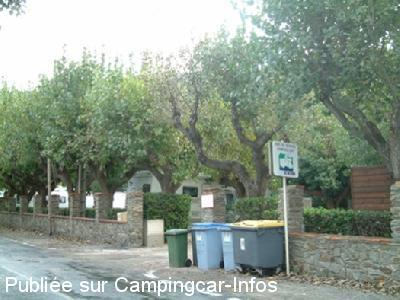
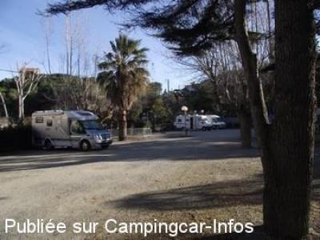
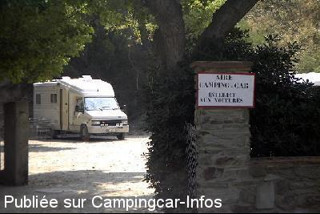

ASN = Aire de services avec stationnement nuit possible de :
PORT VENDRES
(N° 194)
Accès/adresse :
Route de la Jetée
Plage des Tamaris
66660 PORT VENDRES
Plage des Tamaris
66660 PORT VENDRES
Latitude : (Nord) 42.51743° Décimaux ou 42° 31′ 2′′
Longitude : (Est) 3.11443° Décimaux ou 3° 6′ 51′′
Tarif : 2014
Stationnement, services : 6 à 10 €
Type de borne : EUROSERVICES
Services :


Poubelles
Centre ville à 20 mn à pied
Autres informations :
20 emplacements ombragés
Stationnement limité 4 jours
Attention, pour avoir de l'eau il faut payer le stationnement
Tél Office du Tourisme + 33(0)468 820 754
Tél Mairie : + 33(0)468 820 103
http://www.port-vendres.com/

Le 15/04/2011 par Brian Ramsden

Le 22/02/2011 par skipper

Le 27/02/2007 par ardechois07
de
PERON Daniel
le 13/01/2016 :
bonjour , nous voulions visiter Collioure,donc on s'est gare sur l'aire de Port Vendres,et avons pris le bus au port.
ville superbe,ses ruelles étroites avec ses commerces,,somme rentres avec le bus ,l'arrêt se trouve en bas du parking des murailles.
nous y retourneront avec nos petits enfants pour pâques.
bonne année a tous!
bonjour , nous voulions visiter Collioure,donc on s'est gare sur l'aire de Port Vendres,et avons pris le bus au port.
ville superbe,ses ruelles étroites avec ses commerces,,somme rentres avec le bus ,l'arrêt se trouve en bas du parking des murailles.
nous y retourneront avec nos petits enfants pour pâques.
bonne année a tous!
de
andre
le 26/10/2015 :
Aire acceptable attention aux branches basses . Dommage que la police passe encaissé ...
La ville est typique, bien . Belle balade autour .
Aire acceptable attention aux branches basses . Dommage que la police passe encaissé ...
La ville est typique, bien . Belle balade autour .
de
Alastor9
le 21/06/2014 :
§ Nous nous y sommes arrêtés en fin de matinée le jeudi 29 mai, une place à l'ombre sous les arbres nous avons mangés au frais, et nous sommes repartis vers 15 h 30 nous n'avons vu personne pour encaisser les 10 € mentionné à l'entrée,
Aire tranquille à cette heure là, plus de 20 C-C présent. mais un peut trop loin de la "Ville".
§ Nous nous y sommes arrêtés en fin de matinée le jeudi 29 mai, une place à l'ombre sous les arbres nous avons mangés au frais, et nous sommes repartis vers 15 h 30 nous n'avons vu personne pour encaisser les 10 € mentionné à l'entrée,
Aire tranquille à cette heure là, plus de 20 C-C présent. mais un peut trop loin de la "Ville".
de
Anemone 66
le 12/06/2014 :
Il est vrai que 10 euros c'est cher , d'autant plus que l'an dernier en mai, juin,la nuit était à 5,50 euros.
Nous avons été surpris de cette augmentation : 4€50.
Il est vrai que 10 euros c'est cher , d'autant plus que l'an dernier en mai, juin,la nuit était à 5,50 euros.
Nous avons été surpris de cette augmentation : 4€50.
de
Daniel burgueyre
le 24/05/2014 :
Nous y sommes passés pour la nuit du 4 au 5 Mai. Aire agréable, mais au niveau des services 10 € je trouve cela trop cher. Je ne pense pas que l'on y repasse
Nous y sommes passés pour la nuit du 4 au 5 Mai. Aire agréable, mais au niveau des services 10 € je trouve cela trop cher. Je ne pense pas que l'on y repasse
de
fm
le 29/10/2013 :
belle aire un peu loin du centre ville
belles promenades le long de la cote
dommage qu'à cette saison (29 octobre 2013) et apres avoir passer plusieurs jours, la police nous a demandé de quitter immédiatement l'aire limitée à 4 jours
belle aire un peu loin du centre ville
belles promenades le long de la cote
dommage qu'à cette saison (29 octobre 2013) et apres avoir passer plusieurs jours, la police nous a demandé de quitter immédiatement l'aire limitée à 4 jours
de
HARNOIS
le 07/10/2013 :
Aire petite mais sympa où nous avons trouvé une place en arrivant en fin de journée. La ville est un peu loin, mais avec les vélos pas de soucis. De superbes balades le long du chemin côtier.
Aire petite mais sympa où nous avons trouvé une place en arrivant en fin de journée. La ville est un peu loin, mais avec les vélos pas de soucis. De superbes balades le long du chemin côtier.
de
jojo
le 26/09/2013 :
aire trop petite mais au calme au bord de la mer pas loin de la ville en bus ou en vélo rien a redire certaine grande ville devrait prendre exemple
aire trop petite mais au calme au bord de la mer pas loin de la ville en bus ou en vélo rien a redire certaine grande ville devrait prendre exemple
de
JCL
le 31/05/2013 :
Y avons passé une nuit en mai. Il est vrai qu'il vaut mieux arriver tôt pour trouver une petite place car les emplacements sont réduits.Je n'ose imaginer l'aire en été et pourtant le cadre n'a rien de très agréable et il faut un bon bout de temps pour aller à pied au village mais c'est la seule solution pour découvrir ce joli site.
Y avons passé une nuit en mai. Il est vrai qu'il vaut mieux arriver tôt pour trouver une petite place car les emplacements sont réduits.Je n'ose imaginer l'aire en été et pourtant le cadre n'a rien de très agréable et il faut un bon bout de temps pour aller à pied au village mais c'est la seule solution pour découvrir ce joli site.
de
francis
le 26/08/2012 :
Pas mal, bien situé en bord de plage...
Très prisée mais, pour moi dommage car fort poussièreux.
Et par temps chaud, pas beaucoup d'air...
Pas mal, bien situé en bord de plage...
Très prisée mais, pour moi dommage car fort poussièreux.
Et par temps chaud, pas beaucoup d'air...
de
adeline85
le 01/05/2011 :
De passage fin avril, l'aire de Port-vendres est très agréable avec à disposition des WC.Cependant, il faut arriver de bonne heure pour espérer trouver une place. Si vous désirez visiter la ville,il est possible de se garer à proximité du super U de la ville. Nous avons pris le petit train de la ville qui nous a déposé à Collioure. Il est possible de rester pendant une heure pour visiter Collioure et prendre le train suivant pour revenir vers Port-Vendres. Excursion magnifique à faire pour 7 euros.
De passage fin avril, l'aire de Port-vendres est très agréable avec à disposition des WC.Cependant, il faut arriver de bonne heure pour espérer trouver une place. Si vous désirez visiter la ville,il est possible de se garer à proximité du super U de la ville. Nous avons pris le petit train de la ville qui nous a déposé à Collioure. Il est possible de rester pendant une heure pour visiter Collioure et prendre le train suivant pour revenir vers Port-Vendres. Excursion magnifique à faire pour 7 euros.
de
gegedu45
le 28/01/2010 :
Aire très bruyante (prévoir les boules pour la nuit), le port fonctionne toute la nuit et vous avez droit à tous les bruits de l'activité d'un port (chariot, choc des conteneurs, groupes frigo) durant la nuit. Sinon, rien à dire. Il vaut mieux s'installer plus haut vers le cimetière, vue sur la mer et pas de bruit si ce n'est celui du vent.
Aire très bruyante (prévoir les boules pour la nuit), le port fonctionne toute la nuit et vous avez droit à tous les bruits de l'activité d'un port (chariot, choc des conteneurs, groupes frigo) durant la nuit. Sinon, rien à dire. Il vaut mieux s'installer plus haut vers le cimetière, vue sur la mer et pas de bruit si ce n'est celui du vent.
de
DANY20
le 14/03/2009 :
Cette est bien car départ de randonnées mais pour les gros CC, attention aux branches d'arbre. Arriver de bonne heure si possible.
Cette est bien car départ de randonnées mais pour les gros CC, attention aux branches d'arbre. Arriver de bonne heure si possible.